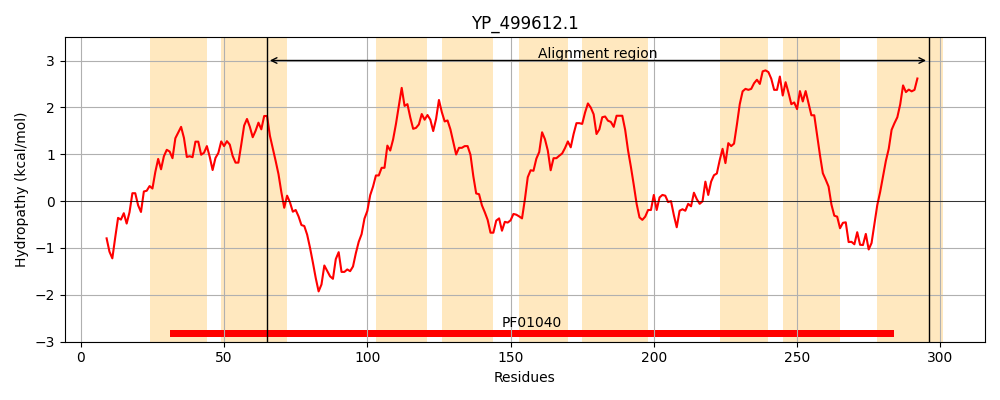
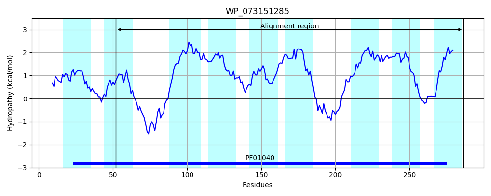
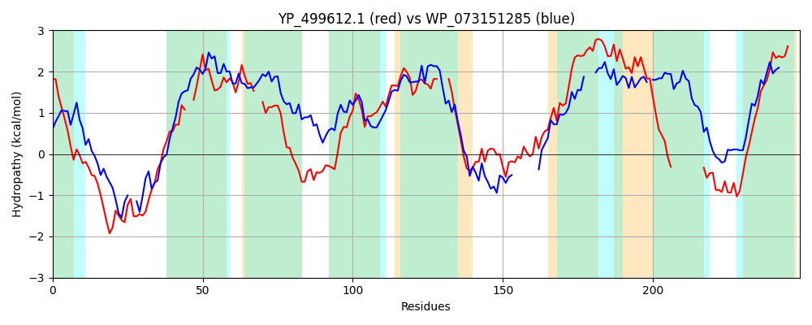

Hit Accession: WP_073151285
Hit TCID: 9.B.241.2.6
Hit Description: gnl|BL_ORD_ID|21404 gnl|TC-DB|WP_073151285.1|9.B.241.2.6 4-hydroxybenzoate octaprenyltransferase [Seinonella peptonophila]
Mach Len: 249
e:0.000000
Query TMS Count : 9
Hit TMS Count: 9
TMS-Overlap Score: 7.900000
Predicted Substrates:None
BLAST Alignment:
Score: 124 , Bit scores: 52 bits, E-value: 7.0e-08, Alignment length: 249, Percentage identity: 25
Query: 65 TLIMGGACALNNYYDQDIDRIMPSKQNRPTVNNRITDQNLLLLSF--GMMLVGEICLFLLNIPSGVLG--LMGIVGYVSYYSIWSKRHTTWNTVIGSFPGAVPPLIGWVAIEGQISLTAIALFLVVFCW---QPIHFYALAIKRKDEYALANIPMLPSVKGFKRTRVSMFIWLIILLPVPLLLINLGVVFVVLATLLNLGWIALGLT----------TFKKNSDQTKWATQMFIYSLNYLVIFFVLAVI 296
TL M GA + ++ IDR + +K P +NR LL +F G +++ + LF + L L+ + ++ + ++KR T + A PL GW+AI G+I LTAI LF+ V W + + + + L +IP R + +W+ L+ L+ G+V ++L T L L W +G+ + +D ++ T F + VI F+ A++
Sbjct: 52 TLAMVGARSAAMALNRIIDRKIDAKN--PRTSNRALPAGLLSETFVWGFVVLSFVLLFFAALQLNWLTVYLLPLAVFILVFYSYTKRFTWLCHFVLGISTAAGPLGGWIAITGRIDLTAIILFITVALWIGGFDVIYACQDVSFDRQERLHSIP--------ARFGIRAALWISSLMH---LVTICGLVALLLMTELQL-WFGIGIAIAFLILIYEHSIVSPNDLSRLNTAFFTMNGILSVIVFLFAMV 286 | Protein Hydropathy Plots: |
|---|
|  |  |
Pairwise Alignment-Hydropathy Plot:
|
|---|
|  |